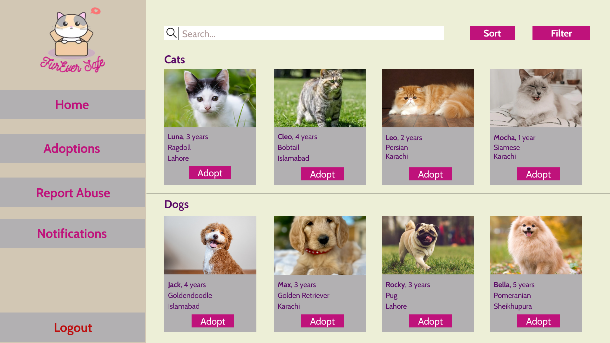

CivicBridge develops digital platforms that help NGOs manage volunteers, track social impact, and streamline community services.
Explore Our Services
CivicBridge's fictional business plan uses the FurEverSafe platform as an illustrative example: a digital system that could allow citizens to report animal abuse, track rescue operations, and connect with local NGOs.
The concept includes a centralized dashboard where NGOs could manage reports, coordinate volunteers, and monitor rescue cases in real time.
This example was included to demonstrate how the proposed services could support an animal-welfare initiative.